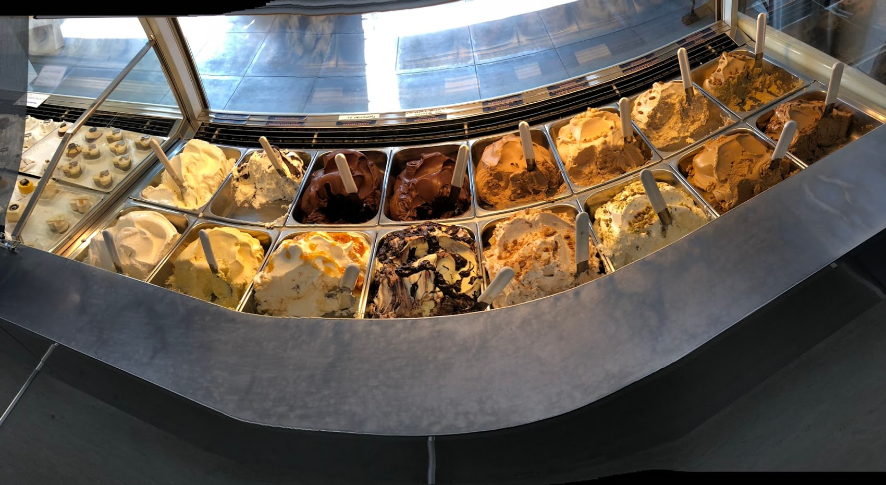
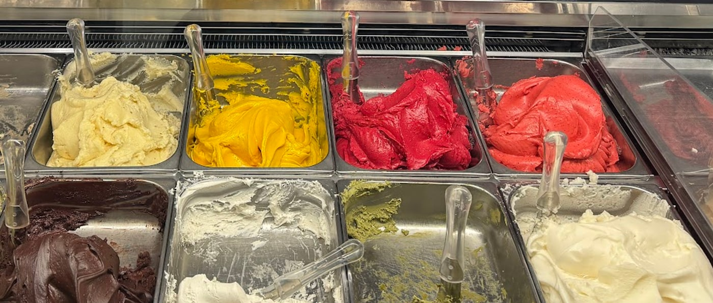
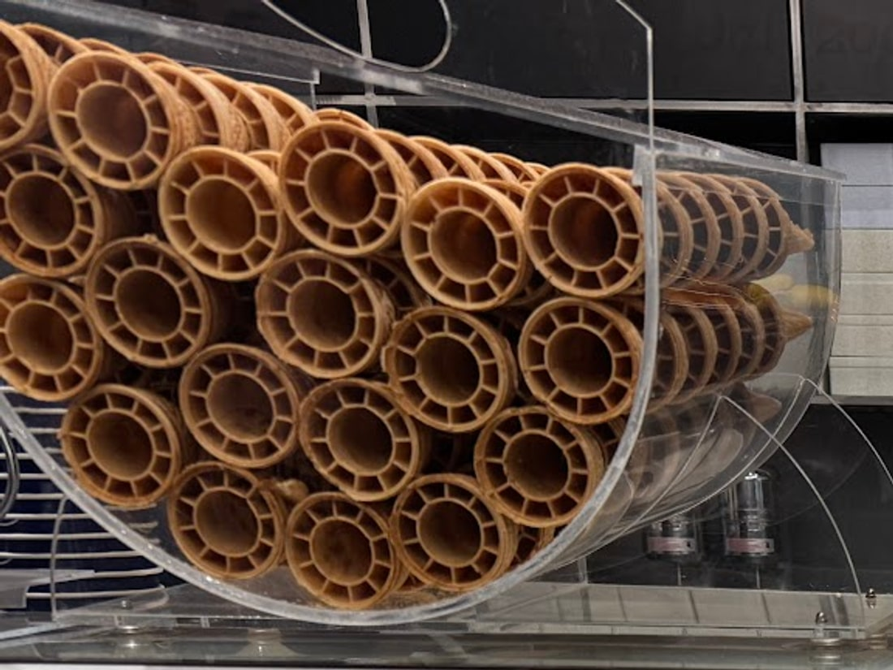

Gelateria artigianale — Bovisa, Milano
Quello che
non devi chiedere.
In quasi tutte le gelaterie certe cose si chiedono al banco, sperando. Qui ci sono già.
-
«Avete un cono senza glutine?»
I coni sono tutti senza glutine.
Non esiste il cono normale e quello per celiaci: quello che diamo a chiunque entri è già senza glutine. Nessuno deve spiegare niente al banco.
-
«C'è qualcosa di vegano?»
I gusti vegani ci sono sempre.
Non uno di cortesia, tenuto da parte: sono in vetrina insieme agli altri, e cambiano come cambiano tutti gli altri.
-
«E qualcosa di leggero?»
I ghiaccioli sono 98% frutta.
D'estate ci sono i ghiaccioli: quasi solo frutta, il resto è quel poco che serve a tenerli insieme. È la cosa che i clienti consigliano per il dopo cena.
Tre fatti presi dalle recensioni dei clienti, non dal nostro reparto marketing.
Il banco
Bianco, acciaio,
e i colori stanno
nelle vaschette.
La sala è essenziale: acciaio inox, vetro, superfici chiare. Non c'è arredamento che chieda attenzione, perché l'unica cosa colorata deve essere il gelato.
Le recensioni la descrivono «molto pulita ed elegante». È anche il motivo per cui questo sito è fatto così: bianco, poche cose, tipografia grande.


I gusti
Cambiano.
Due però tornano sempre.
Pistacchio
«A mani basse il più buon pistacchio che abbia mai assaggiato a Milano.»
Mandorla
«Il top sono pistacchio e mandorla. Da provare.»
Il resto della vetrina ruota. Ogni tanto compare qualcosa di più insolito — un mix di agrumi con Campari — ma senza esagerare: «gusti originali ma non troppo», scrive una cliente.
Oltre al banco ci sono torte gelato, dolci, paste e gelati con biscotto. E si resta aperti d'inverno come d'estate.

Recensioni Google
4,6 su 1.245.
«A mani basse il più buon pistacchio che abbia mai assaggiato a Milano!!! Mi ha ricordato il gelato di qualche gelateria siciliana. Gelateria con un sacco di gusti, molto pulita ed elegante, servizio impeccabile.»
Salvo, Local Guide
«Miglior gelato di Milano a mani basse! Qualità eccellente. Preparano anche dolci e paste e gelati con biscotto buonissimi. In periodo estivo fanno dei ghiaccioli super rinfrescanti 98% frutta, per un dopo cena leggero. Ragazze gentilissime e sorridenti.»
Sofia Moccia, Local Guide
«Il gelato migliore di Milano. Non serve aggiungere altro. Il titolare è un amante di materie prime eccellenti. Ci sono tanti gusti vegani e torte gelato buonissime. I coni sono gluten free per soddisfare anche i celiaci. Sia d'inverno che d'estate.»
Davide Michelini
«Una delle gelaterie più buone di Milano. Gusti originali ma non troppo esagerati (mix di agrumi con Campari è il più pretenzioso). Ma il top sono pistacchio e mandorla. Da provare.»
Silvia De Fre
«Scoperta casualmente tornando a casa! Una piacevole sorpresa, i gusti erano molto particolari ma adatti al mio palato e oltre ad essere buonissimi, la ragazza che mi ha servita era molto cortese.»
Giulia Pellegrini
Dentro
Tre inquadrature.
Le foto pubbliche sono poche: queste sono quelle verificate. Una gelateria fatta di bianco e acciaio merita un servizio fotografico all'altezza.
Dove siamo
Bovisa,
fino alle 23.
Via Benedetto Varchi 420158 Milano
- lunedìchiuso
- martedì12:00–23:00
- mercoledì12:00–23:00
- giovedì12:00–23:00
- venerdì12:00–23:00
- sabato12:00–23:00
- domenica12:00–23:00
Consumazione sul posto · asporto · consegna a domicilio
Chiama la gelateriaDomande
I coni sono senza glutine?
Sì, tutti. Non c'è un cono normale e uno per celiaci: quello che diamo a chiunque è già senza glutine.
Ci sono gusti vegani?
Sì, e non uno solo: sono sempre in banco, non su richiesta.
Che cosa sono i ghiaccioli 98% frutta?
Ghiaccioli estivi fatti quasi interamente di frutta. Il 98% è la quota di frutta; il resto è quel poco che serve a tenerli insieme.
Quando siete aperti?
Da martedì a domenica, dalle 12 alle 23. Il lunedì è chiuso. Siamo aperti d'inverno come d'estate.
Fate torte gelato?
Sì, insieme a dolci, paste e gelati con biscotto. Per le torte conviene una telefonata.
I gusti sono sempre gli stessi?
No, cambiano periodicamente. Pistacchio e mandorla sono quelli che i clienti citano più spesso.